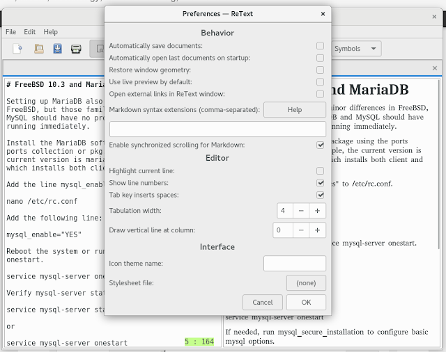

ReText for Markdown (Linux)¶
If you’re writing .md files, reference documentation, or just notes for code or software, you’re more than likely using an integrated editor, a commercial web service such as Atlassian Confluence, or just a plain text editor on your workstation. If you’re just getting started in writing technical documentation, have your own independent projects, or not interested in using or learning markup, you can use third-party editors like ReText, which is available for Linux distributions.
With text editors such as ReText, you can work separately from your IDE daily driver or CMS. You can certainly work directly in GitHub and write reference notes and comments for code since there are plenty of Markdown dialects available, but applications such as ReText help you stay productive if you prefer not to work in a collaborative working environment.
ReText supports basic formatting used in Markdown, ReStructured Text, and Textile. The editor has a preview pane and supports most types of text encoding. Even if you’re not familiar with Markdown, you should be able to complete short text documentation easily. Although the formatting options in the toolbar don’t include all of Markdown formatting, you can use accepted Markdown markup directly on the editor.
Once you’re done, you can save the file to .mkd, export to HTML, ODT, or PDF, or just copy and paste the completed text to the final publishing medium or service.